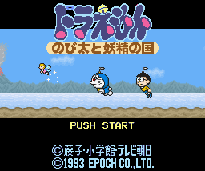
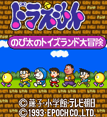
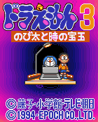
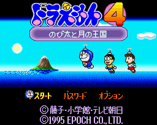

Doraemon - SNES Games

- Company: Epic [kanji]
- Date Released: 19 Feb 1993
- Price (in yen): 8000
- Genre: Platform game
Controls
- A button: Speak/Confirm/Shoot
- B button: Fly/Jump
- X button: Change Weapon
- Y button: Run
- L button: [not used]
- R button: [not used]
- Start: Access Map
- Select: Open/Close Menu
From Matteo Fancellu:
This game has a section of exploration. In this RPG-like section, you have to move
Doraemon into Nobita's town and speak with the people that he meets in the streets or in the houses. Even though the
dialogue is all in japanese, you will know something important is being said when you hear a bell. At this point, if you
push Start, you will see a flashing point on the map that represents a platform section. At the beginning of the
game, you are able to control only Doraemon but later in the game you can control the Nobitas and others. In the
platform levels, your character can jump on enemies or use special weapons to defeat them. There are many things to
find in the levels, but it is important to collect the 12 bells to complete the game. I don't know much about the story, but
a little fairy has come from another world looking for help.

- Company: Epoch
- Genre: Platform game
Controls
- A button: Speak/Confirm/Shoot
- B button: Fly/Jump
- X button: Change Weapon
- Y button: Run
- L button: [not used]
- R button: [not used]
- Start: Access Map
- Select: Open/Close Menu
From Matteo Fancellu:
This game is very similar to the first game. Now you can choose which character to use at the beginning of each level.
Everyone has a different ability; you can also choose Doramichiyan, a female cat that looks like Doraemon. The
platform levels are longer and a little bit harder than the ones of the first episode.

- Company: Epoch
- Date Released: 1994 (re-released Aug 1998)
- Price (in yen): (re-release price 1000)
- Genre: Platform game
Controls
- A button: Fire
- B button: Jump
- X button: [not used?]
- Y button: [not used?]
- L button: [not used?]
- R button: [not used?]
- Start: Pause
- Select: Bring up Inventory Menu
In this game, it seems Doraemon is taking his friend on some sort of time-traveling tour (possibly to get information for
an upcoming school assignment?).

- Company: Epoch
- Date Released: 1995 (re-released Aug 1998)
- Price (in yen): (re-release price 1000)
- Genre: Platform game
Controls
- A button: Shoot
- B button: Jump
- X button: Buddy Flash
- Y button: [not used?]
- L button: [not used?]
- R button: [not used?]
- Start: Pause
- Select: Return to Map (when pressed with Start)
You can choose from six characters before each level. Picking up a certain item causes another
character to hop on your back. There are blocks in the level that bear the face of a certain
character. Somehow, this specific character plays a part in finishing a level.
Anime Video Game Resource Center © 1998 by Luis A. Cruz